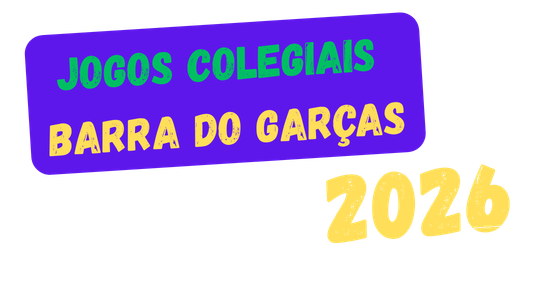
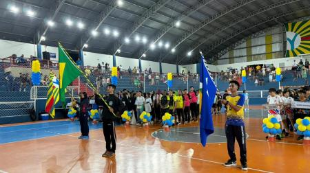

|
|
 |
|
Na terça-feira (07/04), o Ginásio de Esportes Arnaldo Martins foi palco da cerimônia de abertura dos Jogos Escolares Municipais 2026, o maior evento esportivo escolar do município. O evento é promovido anualmente pela Prefeitura de Barra do Garças, através da Secretaria de Educação, Esportes e Lazer, a fim de incentivar a prática esportiva e a interação entre os estudantes barra-garcenses. |
 .png)  |
Saiba Mais
|
Youtube
|
Calendário
|
Referencias:
https://acrobat.adobe.com/id/urn:aaid:sc:US:5c63dea7-35d8-4356-9e09-9a7f061bafdb
https://www.youtube.com/channel/UCKX0c54sXNwBR5jNhDTivfQ
https://www.barradogarcas.mt.gov.br/Imprensa/Noticias/Jogos-escolares-municipais-2026-tem-inicio-em-barra-do-garcas-5785/
https://pt.wikipedia.org/wiki/Wikip%C3%A9dia:P%C3%A1gina_principal